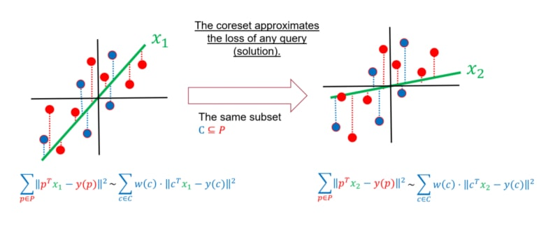
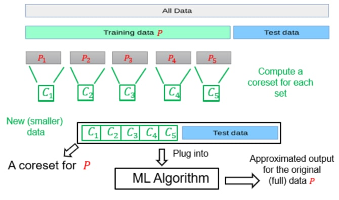

Introduction to Coresets
Motivation
In recent times, the term "Big Data" is being widely used in various domains, including deep learning, machine learning, and robotics, among others. The achievements of machine learning have resulted in increasingly intricate and complex models that require massive amounts of data for training. The availability of these large and diverse datasets has played a crucial role in many of the recent advancements in machine learning.
But do you know “howBIGis Big Data”?
Well, the answer to this question depends on the specific context.
Limited Hardware
Limited Time
New computation models
Big data is not always just a concept - sometimes it is actually very big. Data sets have grown rapidly with the advent of devices such as mobile devices, IoT devices, aerial and remote sensing, software logs, cameras, microphones, RFID readers, and wireless sensor networks. The world's storage capacity for information has doubled roughly every 40 months since the 1980s, and as of 2012, 2.5 exabytes of data are generated every day. IDC (International Data Group) predicts that global data volume will continue to grow exponentially, reaching 163 zettabytes by 2025.
For the massive amounts of data created every day which can be considered infinite data, new computation models may be required to support the processing.
The Streaming Model
The Distributed Model
Mislabeled input data
Although modern computation models can handle vast amounts of data, the utilisation of such datasets for machine learning applications often necessitates human intervention. For instance, consider the task of training a machine learning model to differentiate between images of cats and dogs, which requires labelling the images. This process typically entails requesting humans to provide judgments on unlabelled data, such as categorising images as either cats or dogs.
However, the use of vast datasets in machine learning introduces the possibility of human errors during the labelling process, which can result in mislabelled input data and negatively impact the performance of the machine learning algorithm. Thus, data scientists must identify mislabelled data items before applying the machine learning algorithm to ensure a more accurate reflection of the real world.

Data quality
Data quality is a critical aspect of any data-driven application or analysis, and it requires ongoing attention and investment to ensure that data is accurate, complete, and consistent. Even when the data is accurately labelled, data scientists must carefully curate the dataset to extract the most important images for their application. For instance, when faced with a classification problem for cows or dogs given the following dataset:
We can see that the 4th image looks odd as it is unusual to see a cow indoors. Selecting an image of a cow indoors may be crucial to train the model effectively, or conversely, it may need to be discarded as an outlier that doesn't accurately represent the typical use case. The decision to keep or discard the image depends on the specific problem and the goals of the machine learning model.

Coresets
An effective solution to tackle the challenges described above is through the use of "coresets". Recently, this approach has gained more attention in both practical and theoretical domains. In simple terms, a coreset is generally a weighted and smaller subset of the initial dataset, which provides the same solution as solving the problem on the complete and larger dataset without affecting performance metrics.

Defining a problem
To precisely define and construct coresets for a machine learning problem, it is imperative to formally establish all the fundamental components needed to formulate a machine learning problem. The fundamental components that are required to define an optimization problem are:
- The input data (denoted by [%F]): This refers to a dataset, typically large, on which we aim to optimise some cost function.
- The query set (denoted by [%F]): This is the set of potential solutions or models, from which machine learning algorithms aim to derive an optimal model that minimises a given cost function in relation to the input dataset.
- The cost function [%F] we aim to optimise.
These three components serve to precisely define the optimization problem under consideration.
For example, in linear regression:
- The input data comprises a set [%F] and their corresponding label function [%F] (as depicted by the red points in the diagram).
- The query set [%F] is composed of every vector in [%F] (the green line is an example of a query/candidate solution).
- The cost function we aim to minimise is [%F]
Defining a coreset
Given the set of components that collectively formulate an optimization problem, i.e.
- Let [%F] be an input set.
- Let [%F] be the query set.
- Let [%F] be a cost function.
Then, a coreset is a pair [%F] where [%F] and [%F] and such that for every query [%F]
- [%F]
Coresets Properties
A coreset has several interesting properties beyond serving as a close approximation of the optimal solution derived from the original big data. In this blog, we shall outline three properties of a coreset.
-
The loss of the input data [%F] can be approximated by a coreset [%F] with respect to any candidate solution, not just the optimal one, for all [%F]. This property is of great significance as it supports the processing of streaming data and validates the efficacy of heuristics derived from the coreset in achieving good results for the entire data set.
 -
A union of coresets is a coreset. Suppose you are given a set [%F] that was partitioned into 5 subsets [%F]. For each of these subsets, we computed a coreset, i.e., for every set [%F] we have computed its own coreset [%F] - which satisfies for every [%F].
Define the set [%F] and the weights function [%F] as the union of the five weight functions, we get that [%F] is a coreset for [%F], i.e., for every [%F]
 -
Coreset of a Coreset is a Coreset. Recall the set [%F] which is a coreset for the input data [%F]. We can further compute a coreset (once more) for [%F] to obtain a new smaller coreset [%F]. Now, for every [%F]:
- [%F] and
- [%F]
Thus, [%F] is a (smaller) coreset for [%F]. We note that now the approximation error of [%F] is larger than the one of [%F], as we computed a coreset for a coreset.
How to Compute a Coreset?
Coresets are a form of data summarization that approximate the original data and reduce the computational costs while maintaining similar performance.
Now how can we construct a coreset for a given input dataset?
To compute a coreset, there are various methods and algorithms available, each tailored to a specific machine learning problem. These techniques can broadly be categorised into two classes
- Deterministic coresets: For deterministic coresets, the algorithms are designed to produce a set that is certain to provide a precise approximation of the original input data. In other words, there is a 100% guarantee that the output set will accurately represent the entirety of the input data.
- Sampling-based coresets: For this class, algorithms use probabilistic methods to select a subset of data that satisfies certain conditions. The computed subset of data is likely to be a coreset with a high probability, rather than being guaranteed to be a coreset as in the deterministic algorithms.
Each of these classes has its own advantages and disadvantages. For instance, the second category involves probabilistic methods that might fail on some occasions. However, these methods are typically very efficient, resulting in rapid approximations of the initial dataset. Additionally, a common importance sampling framework is frequently employed to calculate a sampling-based coreset, which has been widely used in recent publications. The framework outlines a set of guidelines that involve the following:
- Given the tuple [%F] which defines our ML problem at hand.
- For every item [%F] be a number defining its importance/sensitivity - we will explain how to compute it next.
Having defined and computed the importance weight of each item in the set, the importance sampling framework proceeds to derive a coreset by applying the following steps
- Set [%F], i.e., t is the total (sum of) importance of all points.
- Build the set [%F] as an i.i.d Sample of [%F] points according to [%F]. The larger the m the better the approximation error of the final coreset.
- For every [%F] define its weight as: [%F]
Then, with high probability, [%F] is a coreset for [%F], i.e., [%F] and [%F], such that for every query [%F]:
[%F]
Note. The sample (coreset) size is a function of the desired approximation error, probability of failure, total sensitivity t, and another problem-dependent measure of complexity. We will provide more theoretical detail and insights in future blog posts.
But how to compute the importance
Informally, the significance or weight assigned to an item/point [%F] is defined as its maximum impact on the loss or cost function over all potential candidate solutions, i.e., if there exists [%F] such that [%F] is large with respect to [%F] then, [%F] is important to the query [%F].
The formal definition is given as follows:
- For every [%F]: [%F]
- To explain the definition of sensitivity/importance let’s look at the following two cases, when [%F] is high and when [%F] is low and see the difference between them.
If [%F] is high
- There exists a solution [%F], such that [%F] affects the loss too much ([%F] is important).
- [%F] affects [%F]
If [%F] is low
- For every solution [%F] does not affect the loss, hence, it is not important.
- [%F] does not affect [%F]
Therefore, we perform sampling based on this criterion since it reflects the existence of a solution where our point has a significant contribution to the cost, thus making it critical concerning this solution.
Applications
Let us revisit the initial justifications for the application of a coreset. Subsequently, we shall demonstrate the ways in which coresets can be used to tackle the aforementioned challenges.
Limited hardware/time
One approach to tackling computational or time constraints in applying machine learning algorithms is by constructing a coreset for the data using an efficient sensitivity sampling framework. The coreset can then be used as a representative subset to apply classic machine learning algorithms, resulting in a more efficient approximation with reduced memory and energy consumption.
“Magically” supports the pre-discussed computational settings:
- The streaming setting, which operates on a limited memory with only one pass over an infinite input stream.
- The parallel/distributed setting, which employs multiple threads, such as in GPUs, or more broadly, distributed data across a network, cloud or AWS. The approach may minimise or even eliminate communication between the machines.
- The combined utilisation of (i) and (ii), which allows simultaneous handling of an unbounded stream of data and distributed data.
In the streaming setting, where the data is received in an infinite stream, computing a coreset can help in maintaining a small representation of the Big Dataset. This is done by merging the newly received data chunk/batch with the pre-computed coreset, and then computing a new coreset when the size of the coreset exceeds a predefined limit. By leveraging the property that the coreset of a coreset is a coreset, we can maintain a small coreset for the entire dataset seen so far.
It is important to note that as we compute more and more coresets, the approximation error gets larger. To address this issue, we can use the streaming tree to obtain smaller approximation errors and improve the overall accuracy of the results.
In the distributed setting, where the data is distributed across multiple machines, we can compute a coreset for each dataset separately and merge these coresets into one, allowing for the computation of a solution for the entire dataset. This approach can be further optimised by computing a new coreset for the merged coreset and then solving the problem on the result. Additionally, the streaming tree can be utilised to improve the approximation error and obtain better results.
Identifying Incorrectly Labelled Data and High-Quality Data
Let us revisit the concept of importance defined earlier, which pertains to the sensitivity/importance framework used for sampling points based on their relevance with respect to the loss/cost function.
[%F]
According to the importance definition, an item is deemed significant due to its contribution to the cost/loss of a specific query, whereas other items hardly affect the same query. In other words, other items seem to conform well to the given solution, e.g., being correctly classified, while this specific item does not.
This observation naturally leads to the conclusion that the identified item (e.g., input image) might have been mislabelled at the outset since it exhibits high loss, while other items have a low one. Consequently, one could hypothesise that modifying the label of this item would result in a lower loss for the same query. To detect mislabelled items in a smart way, we can utilise an algorithm based on the importance/sensitivity of the items.
The identified point (e.g., input image) exhibits high quality, that is, the point carries a high degree of sensitivity or importance and is correctly labelled but there are features present in the image, such as the background, surroundings, or colour, that suggest it should be labelled with a different label. e.g., an image of a cow indoors - this is very rare.
Therefore, by applying a smart searching algorithm based on the importance or sensitivity of data points, we can detect important high-quality images. This discovery process can either allow us to identify rare and unusual data that require more focused attention during training to accurately classify them or these images could be misleading to our model and do not represent typical cases. Thus, they should be excluded to prevent their confounding effect on our model's overall performance.
Coresets possess a diverse range of potential applications, and we would like to direct the attention of the interested readers towards the following surveys on the subject matter: Introduction to Core-sets: an Updated Survey and Overview of accurate coresets.